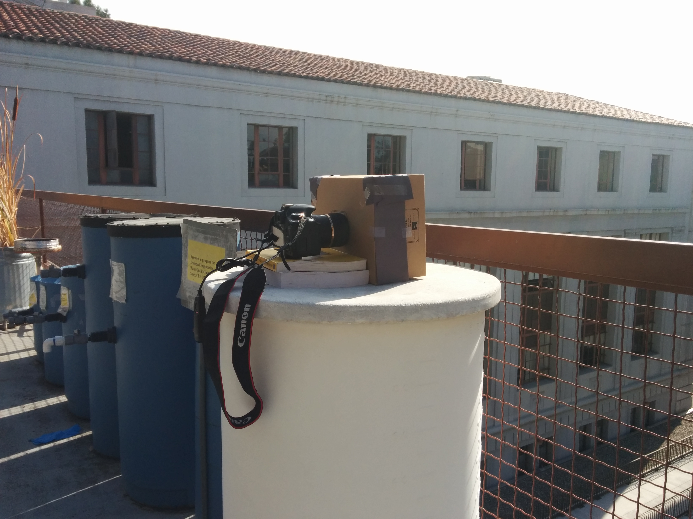
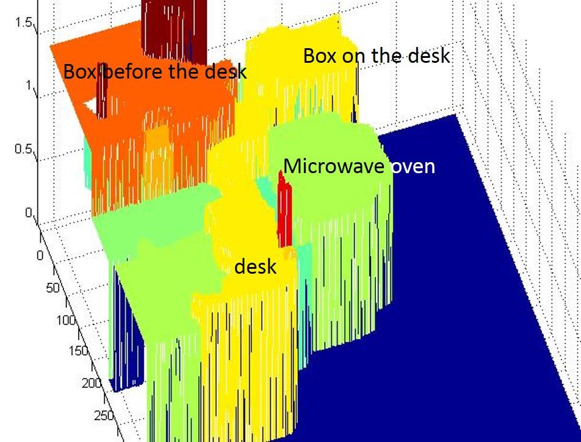

CS194-26: Image Manipulation and Computational Photography
IBuilding a Pinhole Camera
Peng Xue
Haoyu Chen
Haoyu Chen
Set up
|  |
Placeholder
Pictures
 |
 |
 |
 |
 |
 |
0.1 mm diameter |
3 mm diameter |
5 mm diameter |
Placeholder
Adiitional Pictures
 |
 |
 |
 |
Bells and Whistles
light painting
 |
 |
 |
Stereo pinhole camera & 3-D reconstruction
We also implement the stereo pinhole camera. But we failed to get the color glasses to make the "real" anaglyph image. However, we use the left and right photo to estimate the disparity matrix, and reconstructed the 3-D structure.
There are four steps to get the 3-D structure. Firstly the segment analysis is done to separate the photo into some connected region by their color. Secondly the disparity is estimated. Thirdly the disparity is smoothed by the segment, i.e. make the disparities in a plain be close. Finally, we use the formula z=f*B/d to calculate the depths of each point.
The figures below reveals the each step for our model.
The reconstructed 3-D model is below.
|  |